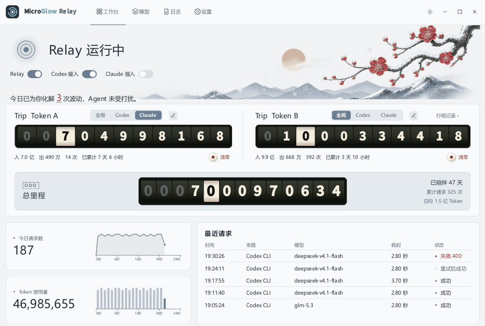

Use third-party models in Codex and Claude Code.
A local gateway for Windows. Relay listens on 127.0.0.1:4141 and lets
Codex (OpenAI Responses) and Claude Code (Anthropic Messages) reach third-party model
providers through one endpoint.
Download for Windows Source on GitHub
Windows x64. The installer is not code-signed; Windows may show a SmartScreen warning. Verify the SHA-256 published with the release.

Three things it does differently
Seasonal skins
Spring, summer, autumn and winter, each with a day and a night palette. This category is mostly grey tables; Relay treats the interface as part of the tool.
Trip Token
Two independent subtotals, like the trip meters in a car. Reset is undoable for ten seconds, a reset writes a ledger entry, and the total never resets.
A different desktop experience
A quiet interface with eight interface languages, built for people who spend the day in a terminal.
Privacy, stated plainly
- No account. Keys and the local token are encrypted with Windows DPAPI inside Relay's own settings.
- Request and response bodies are not stored. Reasoning text is cached locally for up to 7 days.
- Upstream errors are redacted and truncated to 800 characters in the local log.
- Anonymous statistics are opt-in and off by default. Update checks are on by default, once per day.
Compare and alternatives
If you are choosing between a config switcher and a local gateway, start here: Relay vs. cc-switch and alternatives to Relay.
This is the project's public documentation page. It is independent and is not affiliated with, endorsed by, or sponsored by OpenAI or Anthropic. "Codex" and "Claude Code" describe client compatibility only.